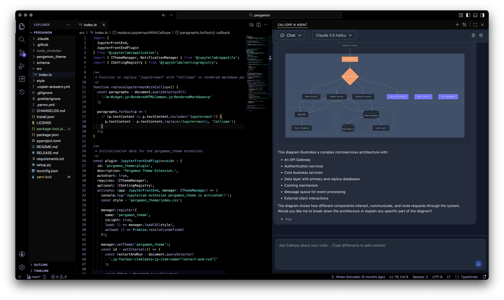
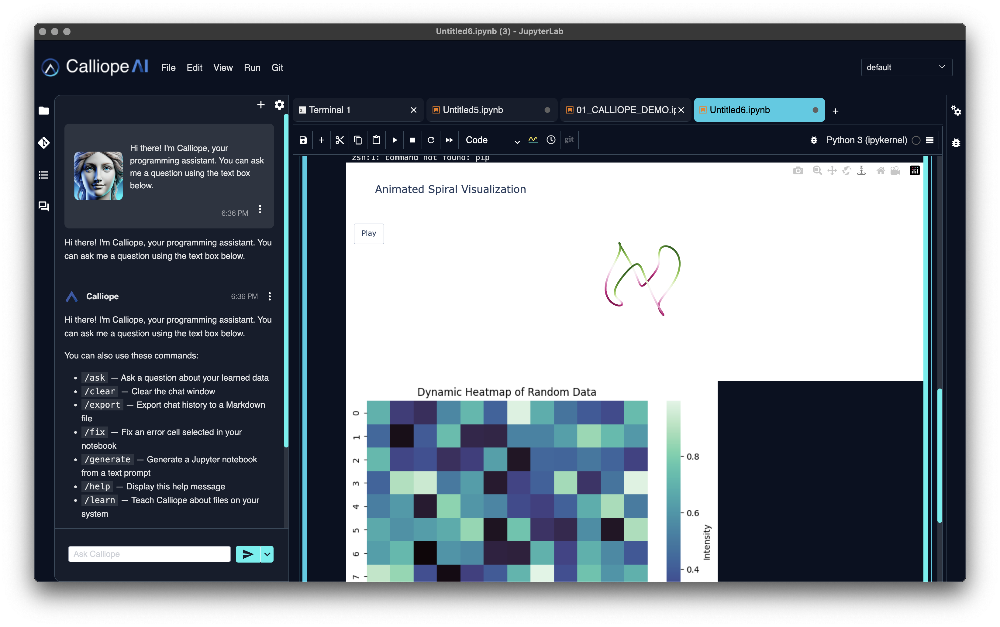
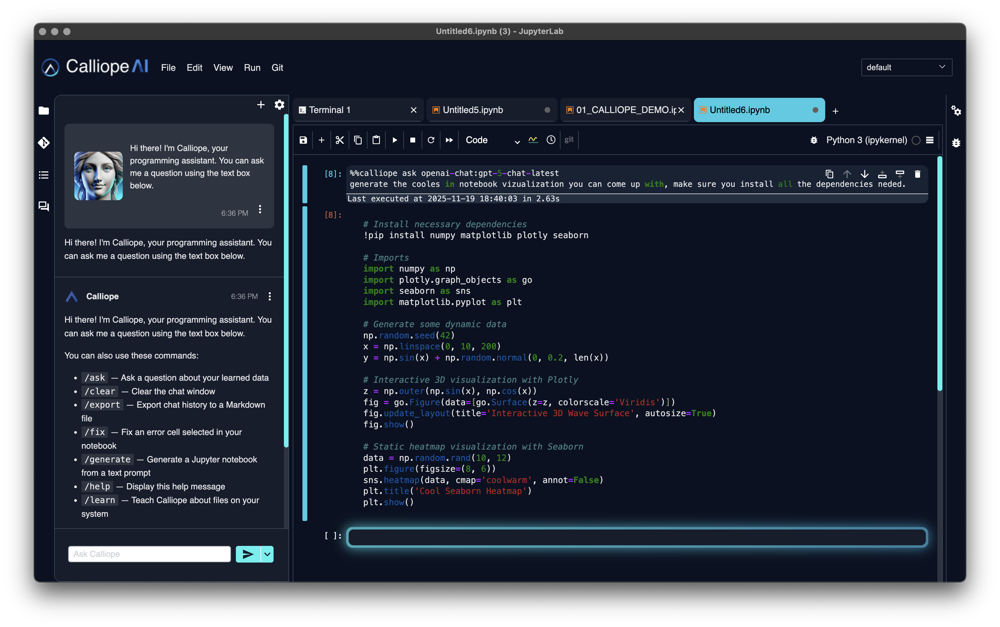

AI Lab
Analysis at the speed of thought.
JupyterLab with an AI copilot. Ask in plain English, get the query, get the chart — over data that never leaves your cloud.
- Natural language → SQL
- 300+ packages bundled
- Governed access & audit
Calliope.ai gives developers, data teams, and analysts one place to code with AI, explore data, build agents, run notebooks, access databases, and work in isolated cloud environments — with security and governance built in.
or get the free deployment blueprint →
Industry focus
Inside the studio
From notebooks to agents to governed deployment — one workspace your team owns end to end.
JupyterLab with an AI copilot — ask in plain English, get the query and the chart, over data that never leaves your cloud.
Five editor modes, 12+ model providers, background agents that plan and execute — every edit staged for human review.
Business users chat with governed data — no SQL, no waiting on the data team, every answer policy-checked and logged.
Autonomous research with RAG pipelines over your own sources. Go deep, not shallow — grounded in your data.
Drag-and-drop builder for agents and pipelines. Ship complex AI workflows without writing glue code.
Web access from inside air-gapped and isolated environments — research and tools without breaking isolation.
AI Lab
JupyterLab with an AI copilot. Ask in plain English, get the query, get the chart — over data that never leaves your cloud.
AI IDE & Agents
Five modes, 12+ model providers, background agents that plan and execute — with every edit staged for human review.
Zentinelle GRC · optional
Observability, real-time policy enforcement, and compliance mapping. Catch violations before they become incidents.
Use cases
From autonomous agents to governed chatbots — build it once, on infrastructure you own.
Stand up multi-agent systems with RAG, tools and memory — Deep Agent and Langflow on top of your own models and data. Ship autonomous workflows without the glue code.
Deep Agent · Langflow
Analysts query governed databases in JupyterLab + AI — notebooks that write and explain their own code.
AI Lab
Business users chat with your data in Chat Studio — no SQL, every answer policy-checked and logged.
Chat Studio
The problem
Environment config, model integrations, secrets management — done from scratch each time a new initiative starts.
Standing up an AI development environment takes weeks of infrastructure work before a line of AI code gets written.
Who launched what? Who accessed which environment? What tools are running? Without centralized access and launch logs, nobody knows until something goes wrong.
Unapproved AI tools spreading across the org — each one with a different security posture, different credentials, no centralized visibility.

The governance layer that makes private AI auditable — every prompt, tool call, and data access logged and enforced. 24 policy controls, mapped to SOC 2, HIPAA & the EU AI Act.
Talk to us about governance →
The deploy layer that puts the whole stack in your account — no AWS cluster to stand up, no DevOps tickets, no waiting. AWS, GCP, Azure & on-prem, with BYOC and VPC peering.
Explore deployment →
Free download
The 18-page guide we use with enterprise teams: reference architecture for self-hosting AI in your VPC, a security & GRC checklist, and the path from zero to governed production.